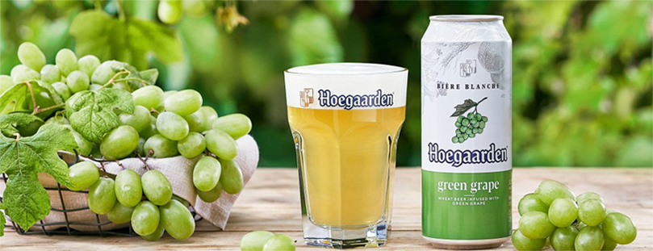

대한민국 대표 맥주 전문기업, 오비맥주
오비맥주는 1933년에 태동하여 80년 이상 한국 주류업계를 이끌어 온 대한민국 대표 ‘맥주 전문기업’ 입니다.
경기도 이천, 충북 청주, 광주광역시 3개 공장에서 최고 품질의 맥주를 생산할 수 있는 최신 자동화 설비를 갖추고 있습니다.
-
01대한민국 유일 맥주 전문 기업, 오비맥주
신선하고 톡 쏘는 맛이 특징인 젊음의 대표맥주 ‘카스’, 국내 저 칼로리 대표맥주 ‘카스 라이트’, 국내 첫 비알코올 음료 ‘카스 0.0,’ 1952년에 탄생한 브랜드를 현대적 감성으로 재해석한 ‘OB라거’, 한국 토종 프리미엄 맥주 ‘카프리’, 맥주의 왕 ‘버드와이저’, 오리지널 벨기에 밀맥주 ‘호가든’, 벨기에 프리미엄 맥주 ‘스텔라 아르투아’ 등 소비자들의 입맛에 맞춘 차별화된 브랜드 포트폴리오로 국내 맥주시장을 견인해 왔습니다. ‘카스’는 특유의 상쾌함과 신선한 맛 덕분에 브랜드 점유율과 선호도에서 1위를 차지하며 명실공히 대한민국 대표맥주로 자리 잡고 있습니다.
-
02다채로운 신제품 출시로 소비자 입맛 공략
20대를 겨냥한 발포주 ’필굿’, 7% 고도수 발포주 ‘필굿 세븐’, 맥주 종주국 독일의 대표 라거맥주 ‘벡스’, 800년 정통의 수도원 맥주 ‘레페’, 상큼한 청포도 맛 맥주 ‘호가든 그린 그레이프’, 라즈베리의 달콤함을 담은 과일 맥주 ‘호가든 로제’ 등 다양한 맥주로 점점 다양하게 고급화되고 있는 소비자들의 입맛을 사로잡고 있습니다.
 -
03세계로 뻗어 나가는 오비맥주
오비맥주는 한국 맥주 수출의 80% 이상을 차지, 국내 맥주 수출 1위를 지키며 맥주 한류를 이끌고 있습니다. 몽골의 대표적 프리미엄 맥주로 자리잡은 ‘카스’를 비롯, 홍콩 시장점유율 1위인 ‘블루걸(Blue Girl) 등 전 세계 24여개국에 24여종의 맥주 제품을 수출하며 해외시장 개척에 앞장서고 있습니다. 2012년에는 국내 주류업계 최초로 수출 1억 달러를 달성해 한국무역협회로부터 ‘1억불 수출의 탑’을 수상했습니다.